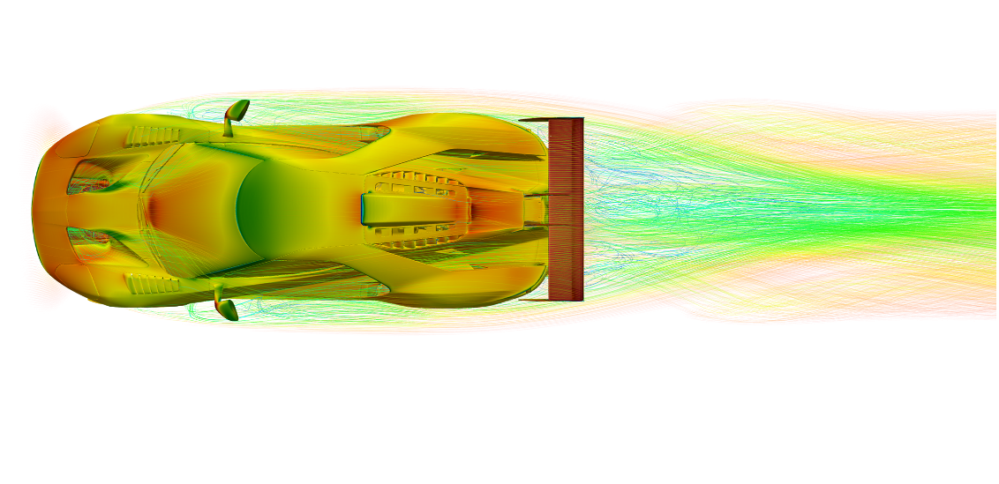
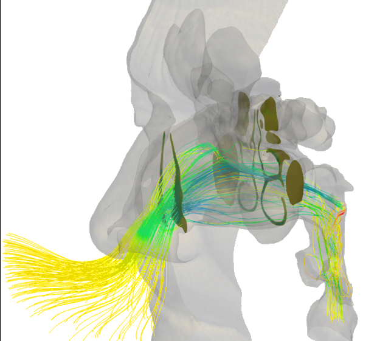

--- PhD DISCUSSION ---
Feature Extraction and Data Augmentation in Computational Fluid Dynamics
Riccardo Margheritti
National PhD in Artificial Intelligence - XXXVIII Cycle
Advisor:
Prof. Giacomo Boracchi
Co-advisor:
Prof. Maurizio Quadrio
Can fluid dynamics be used to reason about the physical system, not only about the flow?

Thesis focus
Coupling physics-based modelling with ML to reveal latent characteristics of physical systems.

Geometry-based data augmentation
Use vertical slides only when they are truly part of the same block.
Key takeaway: the proposed pipeline improves scalability and robustness.
| Method | Accuracy |
|---|---|
| Baseline | 0.78 |
| Proposed | 0.86 |